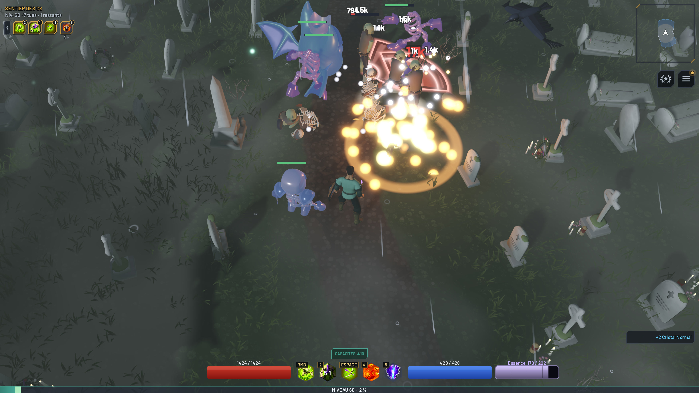

Cimetière, catacombes et nouvelle forge
La forêt de Verdeclat refaite, un cimetière sous la pluie, des catacombes d'ossements, l'auto-craft à la forge et une campagne jusqu'au niveau 55.
La forêt de Verdeclat a été entièrement refaite, un cimetière sous la pluie et des catacombes d'ossements vous attendent, la forge sait maintenant crafter toute seule et la campagne monte jusqu'au niveau 55. Bon jeu !
Verdeclat refaite
La Lisière commence par un débarquement sur une plage étroite, puis la forêt se resserre jusqu'à un arbre géant et son gardien. Le Sentier des Os traverse des tombes oubliées jusqu'au portail du cimetière de Morteval.

Cimetière et catacombes
Rangées de stèles, enclos, ange en deuil, puis un grand escalier sous la crypte : les catacombes de Morteval, tapissées de crânes et presque noires. Votre lanterne découpe les ombres. Squelettes, morts errants, archers et spectres y gardent le Fossoyeur et le Seigneur des Ossuaires.

La forge travaille seule
L'auto-craft vise un ou plusieurs affixes avec un palier minimum (« Force T3 ou mieux ») et enchaîne de vrais essais jusqu'au résultat. Le filtre de butin est refait, avec un aperçu réel du butin au sol et neuf préréglages.
Une campagne resserrée
Niveau 1 au début, niveau 55 sur la toute dernière carte ; les actes II et III gagnent dix tracés neufs et l'on poursuit par le chemin plutôt que par un portail.
Notes de version
Campagne
- La Lisière refaite : débarquement sur une plage étroite, bois de marée, forêt vivante qui se resserre, arbre géant à contourner et gardien à ses pieds. Papillons, hirondelles, lucioles, herbe qui se couche sous vos pas, traces dans le sable.
- Sentier des Os (niveau 2) refait : forêt dense, lisière aux tombes oubliées, portail du cimetière de Morteval, rangées de stèles, enclos, ange en deuil, puis colline et crypte. La lumière tourne au gris en avançant, la pluie commence en entrant dans le cimetière, la brume rampe au sol, les corbeaux s'envolent en croassant à votre approche, et la musique bascule dans une version oppressante.
- Catacombes de Morteval (niveau 3), nouveau : un grand escalier descend sous la crypte, puis des galeries tapissées de crânes et de fémurs, presque noires : votre lanterne découpe les ombres, les bougies vacillent. Au bout, le tombeau du Seigneur des Ossuaires ; à sa mort, un mur s'enfonce et ouvre la remontée vers la suite.
- Nouveaux monstres : squelettes du cimetière, morts errants, archers des catacombes, spectres des ossuaires ; boss le Fossoyeur de Morteval et le Seigneur des Ossuaires.
- Actes II et III : dix tracés de campagne neufs (dunes, nécropole, canyon, coulées, forges…), décor minéral solide, plus de portails de fin : on poursuit par le chemin.
- Les Terres errantes gardent les cartes d'origine.
Progression
- Campagne recompressée : niveau 1 au début, niveau 55 sur la toute dernière carte. Les Cauchemars restent au-delà.
- Carte du monde : les actes V à VII ont enfin leur vraie disposition (ascension de la Flèche, descente des Fonds, approche du Castel).
- Expérience un peu plus lente après le niveau 20 (jusqu'à +25 %).
- Les dégâts des baguettes s'ajoutent aux sorts ; plus d'attaque à mains nues imaginaire.
Forge
- La sélection reste sur l'objet après une confirmation.
- Auto-craft : choisissez un ou plusieurs affixes visés avec un palier minimum (ex. « Force T3 ou mieux » ou « Dextérité T2 »), et la forge enchaîne de vrais essais toutes les demi-secondes, avec le son, les mêmes chances et les mêmes coûts qu'à la main, jusqu'au résultat. Chances affichées, arrêt sur cible, pénurie ou cible impossible. Le craft manuel reste disponible.
Interface
- Filtre de butin refait : règles à gauche, éditeur au centre avec conditions regroupées, aperçu réel du butin au sol à droite ; neuf préréglages en cartes ; le butin masqué ne se survole et ne se ramasse plus (Alt pour le révéler).
- Choix des arbres de talents rangé en colonnes (Physique · Mêlée, Magie · Éléments, Ombre · Rôdeur, Défense · Soutien), sans barre de défilement ; le bouton Retour fonctionne au premier choix.
- Minimap : chemins de retour et de suite visibles, verrouillés en gris tant que le gardien vit.
Corrections
- Relief : le butin ne tombe plus sous le sol sur les collines et les escaliers ; le Bond fracassant, les ruées, les sorts au sol et les sauts/charges des monstres suivent le terrain.
- Les élixirs retirés de la barre ne reviennent plus tout seuls.
- Décors solides : plus de traversée des rochers et troncs, ruées comprises.